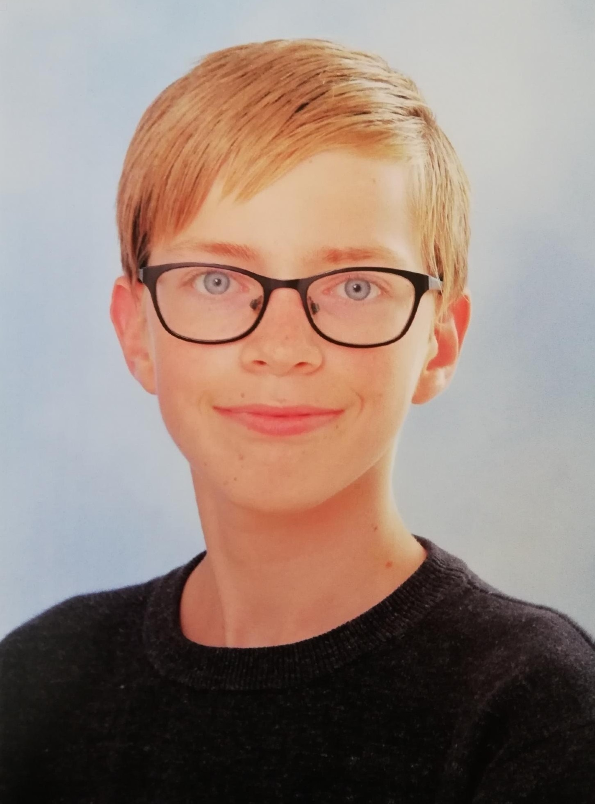

Mijn naam is Justin Patrick Kool
Ik game veel maar ik vind ook anime en youtube ook leuk. Ik ben een stil persoon met weinig vrienden omdat ik vrienden maken moelijk vind.
Ik ben ook een student bij Techniek College Rotterdam en daar studeer ik software develepor.
Voor mijn eerste project op de
TRC moest ik met iemand anders een website maken over de ouderavond voor alle ouders en onze mentor.
Ik ben met noah samen gaan werken
om dat Noah mij vroeg of we samen zouden kunnen werken en sins ik weinig mensen op techniek college rotterdam ken zei ik natuurlijk "oke".
hobbies
MIjn hobbies zijn gamen, tuinieren, en lui zijn. ik speel vooral online games maar ook boord spelletjes als online games speel ik vooral simulatie spellen.
zoals slimerancher 1 en 2 of city skylines maar afentoe speel ik ook idle games zoals cookie clicker. met tuinieren heb ik een eigen mini vijver en een kas.
ik groei op dit moment van het schrijven spaanse pepers, cherry tomaten, komkommerkruid, en tuinkers.